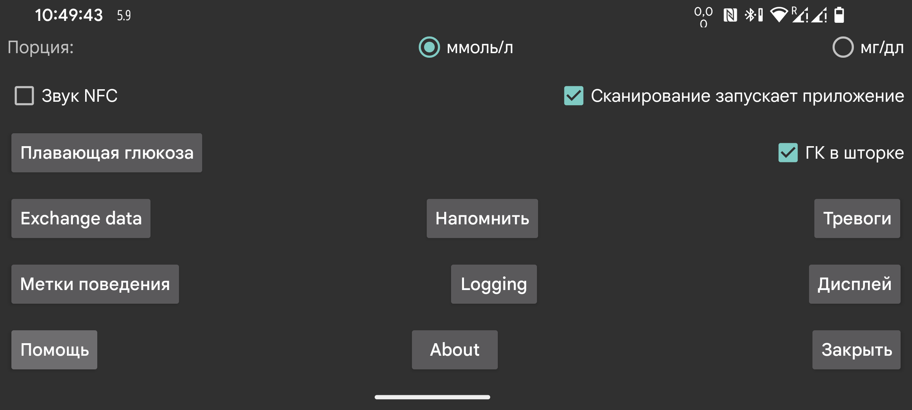

ar be de es fr hi it ja ko nl pl pt ru tr uk uz zh en
Выберите, должны ли значения глюкозы отображаться в mmol/L или mg/dL.
Воспроизводить звук во время сканирования в дополнение к вибрации.
Если включено, это приложение будет запускаться при сканировании датчика через NFC, даже если Juggluco сейчас не отображается. Если этот параметр включен в нескольких приложениях, Android показывает окно выбора приложения. На практике ни однократный выбор приложения, ни назначение приложения по умолчанию не работают. Поэтому в таком случае сканировать без приложения на переднем плане нельзя. Отключение этого параметра в Juggluco позволит хотя бы одному приложению запускаться таким способом.
Если у вас есть root-доступ, можно также отключить NFC-активацию приложения Abbott LibreLink (не работает с Libre 3):
Станьте root в adb shell или termux и введите:
pm disable com.freestylelibre.app.nl/com.librelink.app.ui.common.NFCScanActivity
В LibreLink 2.7.1 и ниже нужно было вводить:
pm disable com.freestylelibre.app.nl/com.librelink.app.ui.common.ScanSensorActivity
com.freestylelibre.app.nl здесь — нидерландская версия LibreLink; замените ее на версию, которую используете вы. Ее имя можно найти командой, даже без root:
pm list package freestylelibre
После этого LibreLink все еще можно использовать для сканирования, когда он находится на переднем плане, но иначе он запускаться не будет. LibreLink 2.5.2 и выше аварийно завершается, если обнаруживает root. В Magisk root легко скрыть, переименовав Magisk и добавив отдельные приложения в denylist (Magisk 24.3) или MagiskHide (Magisk 23.0). Juggluco тоже следует добавить в denylist. Кроме случаев, когда используются американские датчики FreeStyle Libre 2, можно также использовать более старую версию LibreLink без проверки root.
Без root в adb shell можно отключить все приложение целиком:
pm disable-user --user 0 com.freestylelibre.app.nl
Перед обращением в службу поддержки Abbott его можно снова включить командой:
pm enable com.freestylelibre.app.nl
Ранее называлось Глюкоза в строке состояния Android. Если включено, значения глюкозы, поступающие по Bluetooth, тихо отображаются в уведомлении и в строке состояния Android. Если выключить этот параметр, вместо числа показывается точка, а уведомление сообщает только Для подключения к датчику или Для обмена данными. Приложение, которое продолжает работать в фоне, по требованиям Android должно иметь такое видимое уведомление, иначе Android легко остановит его. Juggluco отключает уведомление только тогда, когда выключен параметр Датчик через Bluetooth и нет зеркальных соединений.
На некоторых смартфонах значение глюкозы появляется в строке состояния Android только после изменения настроек уведомлений Android. Например, на Realme GT 5G нужно открыть список приложений→Juggluco→управление уведомлениями, вкладку glucoseNotification, и выключить Set to Silent. После этого пункт Display in status bar будет показан включенным.
Уведомление Android можно также получить, выбрав Уведомлять в левом среднем меню. В этом случае уведомление будет отправлено на некоторые умные часы, если это настроено. Это работает с часами Garmin; работает ли с чем-то еще, мне неизвестно. Сигналы тревоги также создают уведомления.
При включении на экране постоянно присутствует небольшое изображение с текущим значением глюкозы, независимо от того, какое приложение находится на переднем плане. При первом включении вы попадете к списку приложений, где нужно дать Juggluco разрешение отображаться поверх других приложений.
Настройка тревог «Сигнал о низкой глюкозе» и «Сигнал о высокой глюкозе», сигнала потери связи и уведомления «Новое значение доступно».
Укажите метки, используемые для количеств. Открывается экран, где выбирают, какие метки использовать, например для доз инсулина, съеденных углеводов и часов игры в футбол. Если вы также используете приложение Garmin Kerfstok, эти метки отправляются в приложение на часах.
Разные способы отправлять данные из Juggluco в другие приложения или на серверы. Для отправки данных на часы используйте левое меню→Часы.
Укажите, что сигнал должен сработать, если вы не ввели определенное количество еды или лекарства в заданное временное окно.
Сканировать матрицу данных на упаковках датчиков Sibionics, на аппликаторах Dexcom G7/ONE+ и QR-код из левое среднее меню→Зеркало с помощью Google code scanner. Если параметр не отмечен, используется zXing. На большинстве устройств Google scan работает лучше, но иногда не работает. При ошибке всегда используется zXing, но иногда Google scan просто не работает без сообщения об ошибке.
Все настройки, связанные с отображением данных: от целевого диапазона до языка.